<title>Cell Picture Ideas</title>
<meta name="claude:viewport-fit-sides" content="cover">
<link rel="preconnect" href="https://fonts.googleapis.com">
<link rel="preconnect" href="https://fonts.gstatic.com" crossorigin>
<link rel="stylesheet" href="https://fonts.googleapis.com/css2?family=Ysabeau:wght@400;500;600&family=DM+Sans:opsz,wght@9..40,400;9..40,500&display=swap">
<style>
  /* Layout: one calm column on BiGH's rice paper; each idea = its before/after pair, its phone shot, its verdict. */
  :root {
    --paper: #f8f3ea;
    --mount: #fffdf8;
    --ink: #1a1815;
    --muted: #57534c;
    --hair: rgba(28, 27, 25, 0.16);
    --gold: #9a7522;
    --display: "Ysabeau", "Iowan Old Style", Georgia, serif;
    --body: "DM Sans", "Segoe UI", system-ui, sans-serif;
  }
  @media (prefers-color-scheme: dark) {
    :root:not([data-theme="light"]) {
      --paper: #191714;
      --mount: #23201c;
      --ink: #f1ece2;
      --muted: #b7b0a4;
      --hair: rgba(241, 236, 226, 0.18);
      --gold: #d6b25e;
      color-scheme: dark;
    }
  }
  :root[data-theme="dark"] {
    --paper: #191714;
    --mount: #23201c;
    --ink: #f1ece2;
    --muted: #b7b0a4;
    --hair: rgba(241, 236, 226, 0.18);
    --gold: #d6b25e;
    color-scheme: dark;
  }
  body {
    background: var(--paper);
    color: var(--ink);
    font-family: var(--body);
    font-size: 17px;
    line-height: 1.55;
  }
  .page {
    max-width: 920px;
    margin: 0 auto;
    padding-left: max(16px, env(safe-area-inset-left, 0px));
    padding-right: max(16px, env(safe-area-inset-right, 0px));
    padding-block: 40px 72px;
    display: grid;
    gap: 64px;
  }
  h1, h2, h3 {
    font-family: var(--display);
    font-weight: 500;
    line-height: 1.1;
    text-wrap: balance;
    margin: 0;
  }
  h1 { font-size: clamp(34px, 6.4vw, 54px); letter-spacing: -0.01em; }
  h2 { font-size: clamp(26px, 4.4vw, 36px); }
  p { margin: 0; }
  .muted { color: var(--muted); }
  .small { font-size: 15px; color: var(--muted); }
  header, section, .idea { display: grid; gap: 16px; min-width: 0; }
  .lead { font-size: 20px; max-width: 34em; }
  .tag {
    font-family: var(--display);
    font-weight: 600;
    color: var(--gold);
    margin-right: 0.35em;
  }
  .idea { padding-top: 24px; border-top: 1px solid var(--hair); gap: 18px; }
  .story { font-size: 19px; max-width: 34em; }
  .shots {
    display: grid;
    grid-template-columns: minmax(0, 1fr) minmax(0, 1fr) minmax(0, 0.42fr);
    gap: 10px;
    align-items: start;
  }
  @media (max-width: 640px) {
    .shots { grid-template-columns: minmax(0, 1fr) minmax(0, 1fr); }
    .shots figure.phone { grid-column: 1 / -1; max-width: 260px; }
  }
  figure { margin: 0; display: grid; gap: 6px; min-width: 0; }
  figure img {
    display: block;
    width: 100%;
    height: auto;
    border-radius: 4px;
    box-shadow: 0 0 0 1px var(--hair);
  }
  figcaption { color: var(--muted); font-size: 14px; }
  .verdict {
    display: grid;
    grid-template-columns: auto minmax(0, 1fr);
    gap: 4px 16px;
    align-items: baseline;
  }
  .verdict strong {
    font-family: var(--display);
    font-size: 40px;
    font-weight: 500;
    line-height: 1;
    font-variant-numeric: tabular-nums;
  }
  .verdict ul { margin: 0; padding-left: 1.1em; display: grid; gap: 4px; }
  .pick {
    padding: 18px 20px;
    background: var(--mount);
    border-radius: 6px;
    box-shadow: 0 0 0 1px var(--hair);
    display: grid;
    gap: 8px;
  }
  .pick h2 { font-size: 26px; }
  .also { display: grid; grid-template-columns: minmax(0, 220px) minmax(0, 1fr); gap: 16px; align-items: center; }
  @media (max-width: 560px) { .also { grid-template-columns: 1fr; } .also figure { max-width: 260px; } }
  .bottles { display: grid; grid-template-columns: minmax(0, 1fr) minmax(0, 0.34fr); gap: 10px; align-items: start; }
  @media (max-width: 560px) { .bottles { grid-template-columns: 1fr; } .bottles figure.phone { max-width: 260px; } }
  .ask { display: grid; gap: 18px; }
  .q { display: grid; gap: 6px; padding-top: 16px; border-top: 1px solid var(--hair); }
  .q h3 { font-size: 22px; font-weight: 600; }
  .q b { font-weight: 500; color: var(--ink); }
</style>

<main class="page">
  <header>
    <p class="muted">BiGH Science page · November 6, 2026</p>
    <h1>Pictures for “Why start with the cell?”</h1>
    <p class="lead">Each one lights up in gold leaf, a piece at a time, as you scroll to it. All three are shown on the real page. Nothing is live.</p>
    <p class="small">Headline kept, as you said: “Our science starts in the cell.”</p>
  </header>

  <section class="idea" aria-labelledby="a-title">
    <h2 id="a-title"><span class="tag">A</span>Town at dusk (now)</h2>
    <p class="story">San Francisco houses. Each house lights its own lamp, like each cell makes its own energy.</p>
    <div class="shots">
      <figure>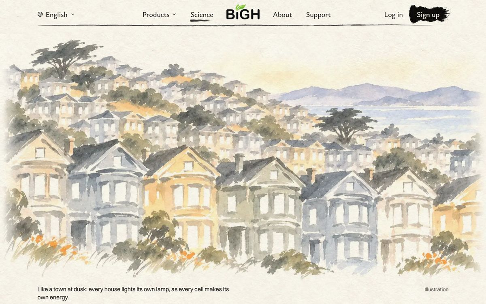<figcaption>As it arrives</figcaption></figure>
      <figure>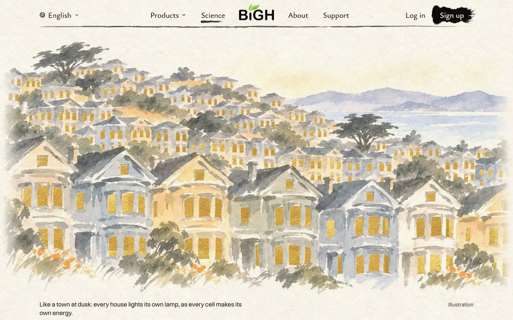<figcaption>A few seconds later</figcaption></figure>
      <figure class="phone">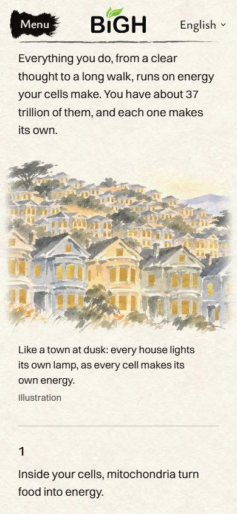<figcaption>Phone</figcaption></figure>
    </div>
    <div class="verdict">
      <strong>8</strong>
      <ul>
        <li>Clearest match to the words: many lamps, each its own.</li>
        <li>Holds it back: a city, not a living thing.</li>
      </ul>
    </div>
  </section>

  <section class="idea" aria-labelledby="b-title">
    <h2 id="b-title"><span class="tag">B</span>Monarchs at Pacific Grove</h2>
    <p class="story">Monarch butterflies spend the winter in this grove. On a cold morning, each one must warm up its own flight muscles before it can fly.</p>
    <div class="shots">
      <figure>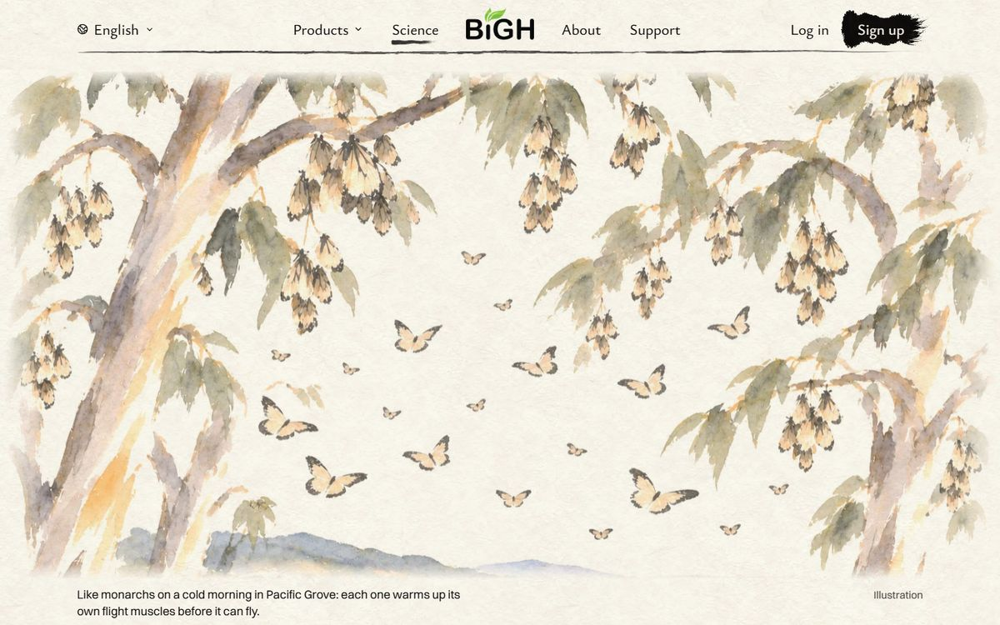<figcaption>As it arrives</figcaption></figure>
      <figure>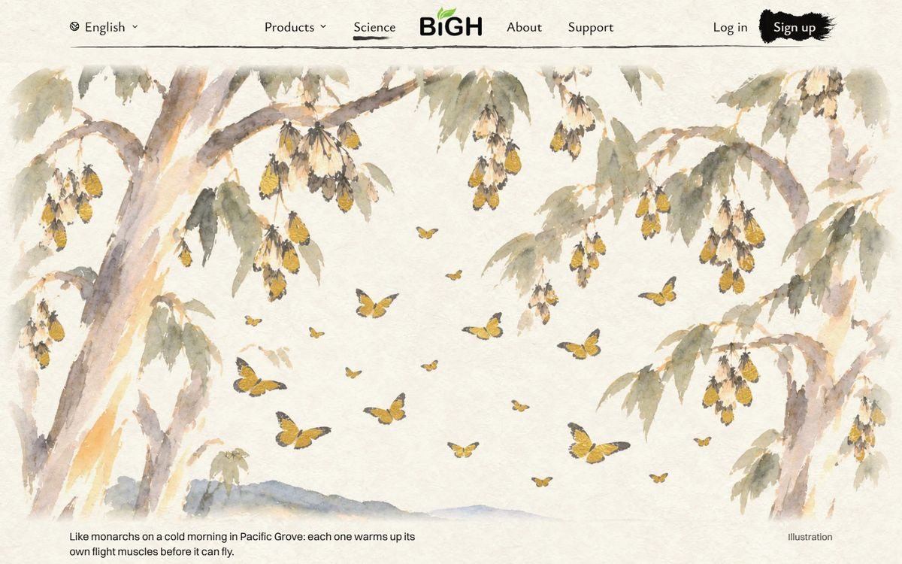<figcaption>A few seconds later</figcaption></figure>
      <figure class="phone">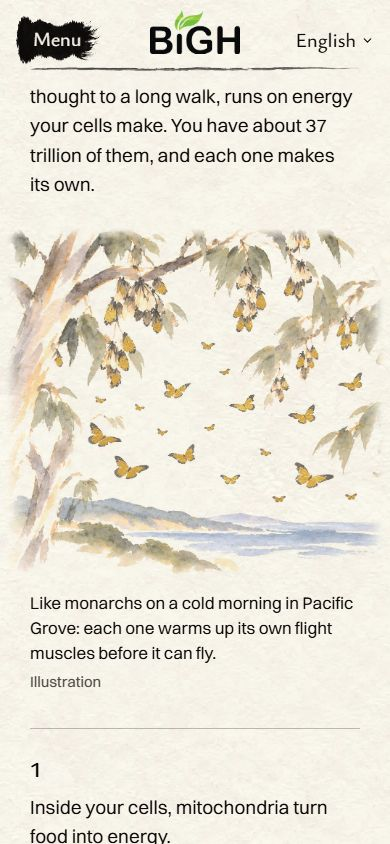<figcaption>Phone</figcaption></figure>
    </div>
    <div class="verdict">
      <strong>8</strong>
      <ul>
        <li>Alive, and very California. A body making energy to move, like “a long walk”.</li>
        <li>Holds it back: before the gold, the pale butterflies look like moths. Only some in each bunch turn gold. Both fixable.</li>
      </ul>
    </div>
  </section>

  <section class="idea" aria-labelledby="c-title">
    <h2 id="c-title"><span class="tag">C</span>Sunflowers, Sacramento Valley</h2>
    <p class="story">A sunflower field at sunrise, valley oaks and a barn behind. Every plant makes its own food from the light.</p>
    <div class="shots">
      <figure>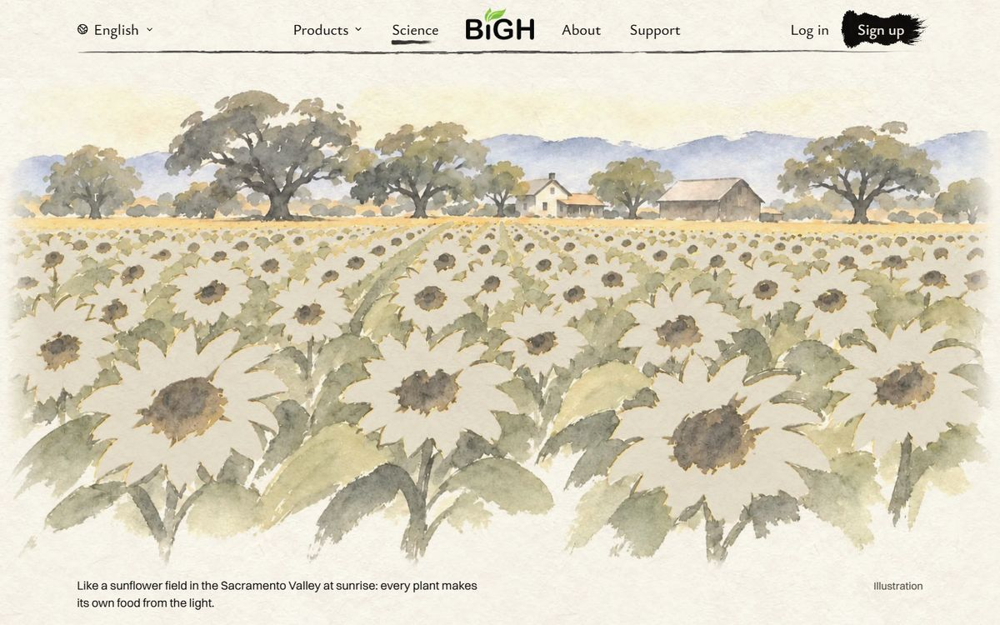<figcaption>As it arrives</figcaption></figure>
      <figure>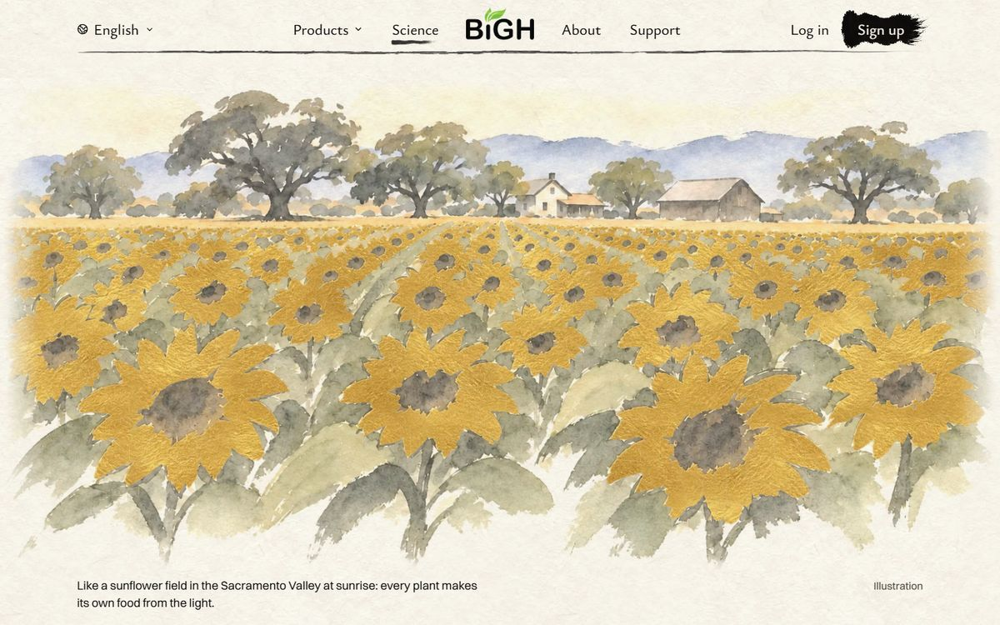<figcaption>A few seconds later</figcaption></figure>
      <figure class="phone">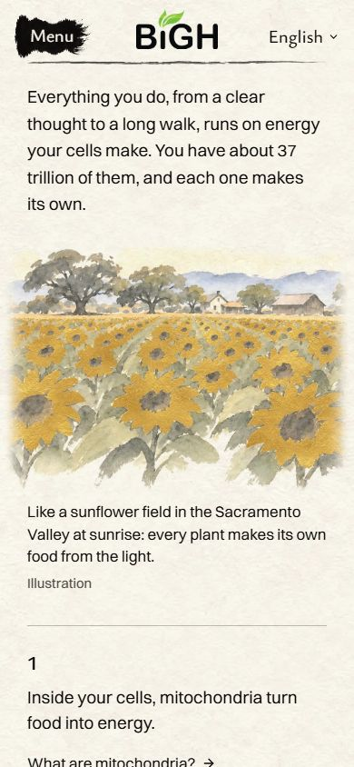<figcaption>Phone</figcaption></figure>
    </div>
    <div class="verdict">
      <strong>7</strong>
      <ul>
        <li>Rich and warm when lit.</li>
        <li>Holds it back: a lot of gold, a little heavy. Before the gold, the flowers look like white daisies. Sunflower fields aren't only Californian.</li>
      </ul>
    </div>
  </section>

  <div class="pick">
    <h2>I'd pick B, the monarchs.</h2>
    <p>Living things, each making its own energy to fly. And it could only be California.</p>
  </div>

  <section aria-labelledby="also-title" class="also">
    <figure>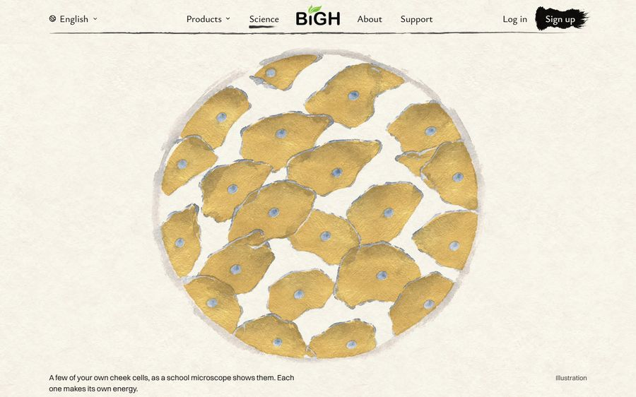</figure>
    <div style="display:grid;gap:6px;min-width:0">
      <h3 id="also-title" style="font-size:20px;font-weight:600">Also tried, left out</h3>
      <p class="small">Your own cheek cells, as a school microscope shows them. The most literal idea. But the gold cells look like potato chips, and there's nothing Californian in it.</p>
    </div>
  </section>

  <section aria-labelledby="bottles-title">
    <h2 id="bottles-title">The bottles you asked about</h2>
    <p>It's the row of five product bottles under “Every formula has a scientist behind it.” My last page never showed it. My mistake.</p>
    <div class="bottles">
      <figure>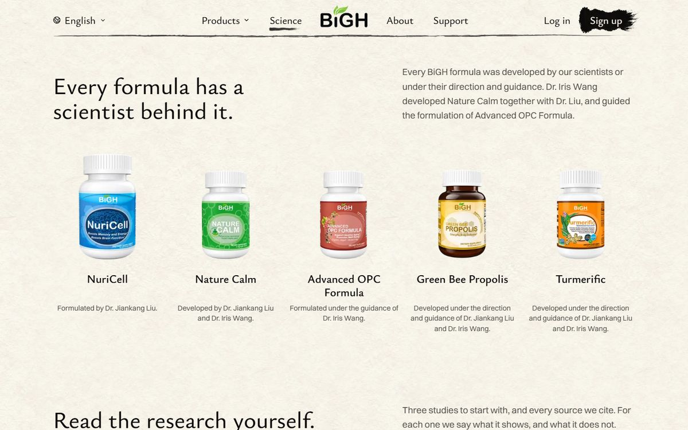<figcaption>Desktop</figcaption></figure>
      <figure class="phone">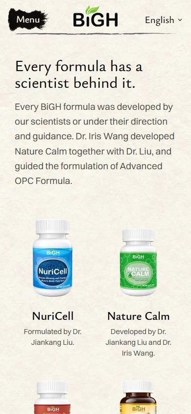<figcaption>Phone</figcaption></figure>
    </div>
    <p class="muted">It hasn't changed since October. Plain bottle photos on paper. Next to the new paintings, it looks like a shop shelf.</p>
  </section>

  <section class="ask" aria-labelledby="ask-title">
    <h2 id="ask-title">Your call</h2>
    <div class="q">
      <h3>2. The picture</h3>
      <p class="muted"><b>A</b> keep the town · <b>B</b> monarchs · <b>C</b> sunflowers</p>
    </div>
    <div class="q">
      <h3>3. The bottles</h3>
      <p class="muted"><b>A</b> leave them · <b>B</b> redesign them next</p>
    </div>
    <p class="small">Reply like “2B 3A”, or say anything else.</p>
  </section>
</main>
